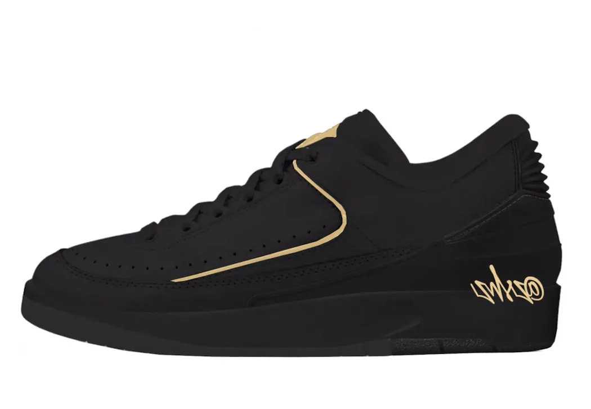

History About the Jordan 2:
The Jordan 2 shoe is a basketball shoe that was first released in 1986 by Nike as a part of Michael Jordan's signature line of shoes, the Air Jordan series. The shoe was designed by Bruce Kilgore, who also designed the iconic Air Force 1, and was the first Air Jordan shoe to not be designed by Peter Moore. The design of the Jordan 2 was inspired by luxury Italian shoes, which is reflected in its sleek and sophisticated look. It features a high-top silhouette with a mix of textured leather and faux lizard skin on the upper, as well as a Nike Air cushioning system in the sole for comfort and support.
Influential Collaborations:
Air Jordan 2 'Don C': The Air Jordan 2 has been the subject of several influential collaborations throughout its history. One notable collaboration was with fashion designer Don C, who released a series of limited edition Air Jordan 2 sneakers between 2015 and 2017. These collaborations featured premium materials, unique colorways, and luxurious detailing, such as quilted leather and gold accents.
Air Jordan 2 'Defining Moments': The Air Jordan 2 was also part of the "Defining Moments" pack, which included a gold-accented version of the sneaker to commemorate Michael Jordan's iconic performance in the 1991 NBA Finals. This was one of the few Jordan 2's that ended up reselling for a vast amount of money. They came out with three pairs in blue, pink, and tan.
Air Jordan 2 'Fragment': In 2014, the Air Jordan 2 was reimagined by designer Hiroshi Fujiwara as part of the "Fragment" collection, which featured a clean and minimalist version of the sneaker in black and white. These collaborations have helped to solidify the Air Jordan 2's place in sneaker culture and demonstrate the versatility and adaptability of the classic sneaker.
Personal Favorites:
When it comes to the Air Jordan 2, there have been numerous collaborations and releases over the years, each with its own unique style and design. However, two of the most highly coveted and sought-after versions of the sneaker are the 'Don C' Air Jordan 2's and the 'Off-White' Air Jordan 2's. In my opinion, the Jordan 2 isn't the best looking Jordan but these two pairs have got to be the best looking Jordan 2's. Both collaborations brought a fresh and modern take on the classic silhouette, with unique materials, colorways, and luxurious detailing that set them apart from the rest. For sneaker enthusiasts, these collaborations represent the perfect fusion of style and functionality, making them highly prized additions to any collection. As someone who has a deep appreciation for the Air Jordan 2, I personally hold the 'Don C' and 'Off-White' versions in high regard, as the Don C embodies luxury wear being mixed with street wear. The Off White's also emobody this but Virgil, head desginer at Off White, has always been into street wear before transitioning to luxury.
Upcoming Jordan 2 Releases:

Air Jordan 1 High OG “Royal Reimagined”
Air Jordan 2 Low Craft “Black Vanilla”
Color: Black/Pale Vanilla
Style Code: FJ0753-001
Release Date: August 4, 2023
Price: $150
Travis Scott x Air Jordan 1 Low OG WMNS “Olive”
Air Jordan 2 Low WMNS “Varsity Royal”
Color: White/Varsity Royal-Black-Muslin
Style Code: DX4401-104
Release Date: August 10, 2023
Price: $150
Air Jordan 2 “Black Cement”
Color: Black/Cement Grey-Fire Red-Sail
Style Code: DR8884-001
Release Date: September 23, 2023
Price: $175
Why the Jordan 2 is Mid:
Below is a short video explaining why the Jordan 2 doesn't do as well as people would hope it does.